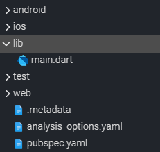
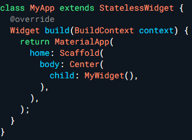

Flutter Project를 처음 생성하면 기본적으로 android, ios, lib, test, web 폴더와 yaml 파일이 생성된다.
또한 lib 폴더 내부에는 main.dart 파일이 생성된다. 이번 포스팅에서는 각 파일의 역할에 대해 정리해 보고자 한다.
? Index
#1 프로젝트 구조
#2 runApp & main.dart
#1 프로젝트 구조
앞에서 얘기했듯이 Flutter Project를 생성하면 다양한 폴더와 yaml 파일이 기본적으로 생성되며, 각각의 기능은 다음과 같다.

android/ios directory - andorid, ios OS에 적합하는 기능을 담기 위한 정보가 담겨있다.
lib - Flutter의 dart파일을 담는 공간이다. 프로젝트의 대부분은 여기서 진행된다.
test - dart 소스코드를 테스트하기 위한 공간이다.
pubspec.yaml - 프로젝트의 이름이나, 환경 변수 설정, 이미지 에셋을 추가할 때 수정하는 등 중요한 기능을 담당하는 핵심 파일이다.
앞서 소개한 파일들을 제외하고도 다양한 파일이 생성되지만 앞으로 주로 사용할 것은 대체로 위의 폴더들이다.
#2 runApp & main.dart
main.dart 파일은 다른 프로그래밍 언어와 마찬가지로 Entry Point 즉, 앱의 시작점이다. 기본적으로 어플리케이션을 구동하면 main.dart 파일이 먼저 호출된다.
우선, flutter framework를 사용하기 위해선 material library를 import 해야만 한다.
main 함수에서 runApp이라는 함수가 호출되는데, runApp은 binding.dart 에 정의되어 있으며 앱의 첫 화면을 송출하는 역할을 한다. runApp 함수 안에는 첫 화면을 송출한 Widget을 넣어 준다.
또한 runApp은 프로젝트 실행 시 단 한 번만 호출된다.
import 'package:flutter/material.dart';
void main() => runApp(MyApp());
Widget이란?
Flutter는 모든 것이 Widget으로 이루어져 있다. 그냥 단순하게 Class라고 생각해도 된다. Widget은 마치 레고 블록과 비슷하다. 레고블록을 여러개 쌓아서 다양한 완성물을 제작하듯, Flutter도 다양한 종류의 Widget(레고블록)을 쌓아 다양한 결과(어플리케이션)를 완성한다.
Widget은 Stateless Widget과 Stateful Widget으로 나뉘는데, 내용이 길어지기에 나중에 따로 정리할 예정이다.
runApp에서 호출하는 MyApp또한 Widget인데 Flutter 내부에서 정의된 내장 클래스가 아니기에 이름을 변경해도 상관 없다.

이어지는 포스팅 에서는 main.dart 코드에 적힌 MaterialApp, Scaffold 그리고 StatelessWidget에 대해 자세하게 정리할 예정이다.